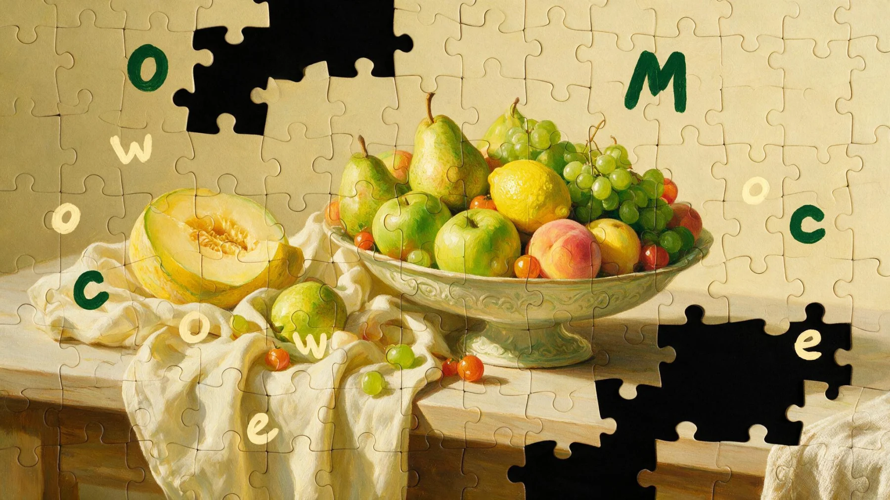

W Black Week do części dostaw dokładamy zaplombowaną czarną skrzynkę. W środku są puzzle i nic poza nimi.

Każde biuro dostaje inne, bo wszystkie skrzynki razem to jedna wielka układanka. Kto ułoży swój kawałek, odczytuje z obrazka ukryty kod i dokłada go do wspólnego obrazu na naszej stronie. To jedyny sposób, żeby wziąć udział w konkursie. A każdy odsłonięty kawałek to paczka, którą oddajemy przed świętami.
Czarna, zaplombowana, bez opisu zawartości. Na plombie jedno zdanie: otwierać całym zespołem.
Rozsypane. Nie ma zbiórki, nie ma terminu w kalendarzu, nikt nie siada do nich na dwie godziny.
Jeden element przy kawie, dwa po spotkaniu. Zwykle w towarzystwie kogoś, kto akurat stoi obok.
Litery są wpisane w martwą naturę i rozciągnięte przez całą grafikę. Brakuje jednego elementu i hasła nie da się odczytać.
Na dailyfruits.pl. Dokłada swój kawałek do wspólnego obrazu i podpisuje go nazwą firmy.
Integracja w kalendarzu nie działa, bo wszyscy wiedzą, że to integracja.
Puzzle na stole działają, bo nikt nic nie ogłasza i nikogo nie zaprasza. Człowiek staje nad stołem na dwie minuty, dokłada element i zamienia kilka zdań z kimś, kogo mija codziennie i z kim nigdy nie rozmawia. Następnego dnia to samo.
Po tygodniu tych rozmów uzbiera się więcej niż na jednym wyjeździe integracyjnym. Dlatego układanka ma być duża. Nie po to, żeby było trudno, tylko po to, żeby leżała na stole odpowiednio długo.
Tak to wygląda w trakcie. Czarne pola to biura, które jeszcze nie usiadły do stołu.
Na dailyfruits.pl ten obraz stoi od pierwszego dnia i na starcie jest cały czarny. Każdy poprawny kod odblokowuje jeden kawałek, a zespół wskakuje z nim na swoje miejsce i podpisuje go nazwą firmy.
Czego nikt nie ułoży, zostaje czarne. Nie dorysowujemy i nie uzupełniamy. Pod koniec grudnia widać dokładnie tyle, ile biura naprawdę zrobiły.
To zdejmuje z nas licznik, odliczanie i pasek postępu. Wynik jest wspólny, a nie nasz.
W tygodniu, w którym cała kategoria tnie ceny, my nie tniemy. Każdy odsłonięty kawałek to konkretna kwota dla organizacji, która przed świętami dowozi rzeczy rodzinom w potrzebie, w rodzaju Szlachetnej Paczki. Odsłonięcie całego obrazu podwaja pulę.
Terminy składają się same. Obraz zamyka się w połowie grudnia, przekazanie wypada dokładnie wtedy, kiedy takie rzeczy się robi.
Biuro nie gra więc tylko o nagrodę dla siebie. Gra o to, żeby sąsiednie biuro też usiadło do stołu, bo dopiero razem robi się z tego pełna kwota.
Dlaczego za kawałek, a nie wszystko albo nic. Gdyby liczyła się wyłącznie pełna plansza, wystarczyłoby jedno czarne pole i w połowie grudnia nikt nie miałby po co kończyć. Tak każde biuro wie, że jego tydzień przy stole już coś zrobił, a komplet jest premią, nie warunkiem.
Dlaczego akurat święta. Kampania i tak kończy się w grudniu, więc nie doklejamy okazji na siłę. Rzecz zaczyna się od pudełka, które przyjeżdża do biura, i kończy pudełkiem, które jedzie dalej.
Kodu nie da się zdobyć bez tygodnia przy stole. Konkurs sam się filtruje.
Każdy kawałek ma swój kod. Cudzy kod nie odblokowuje niczego, więc nie ma sensu go podawać dalej.
Czarny tydzień, czarne skrzynki, czarny obraz, który się odsłania. Wszystko z jednego słowa.
Nasza grafika leży w kuchni klienta przez tydzień albo dwa i nikomu to nie przeszkadza.
Sto pięćdziesiąt zdjęć ułożonych puzzli. Tego nie da się wyprodukować.
Nagrody dostaje trzynaście biur, ale paczka idzie z każdego odsłoniętego kawałka. Przegranych nie ma.
Co edycja inny obraz i inne kody. Reszta mechaniki bez zmian.
Do tego śniadanie firmowe i integracja dla zespołu.
Osiągnięciem jest ułożenie, a nie zabawne zdjęcie, więc ocenianie zdjęć nagradzałoby coś innego niż to, o co prosimy. Każdy odsłonięty kawałek to jeden los.
Liczba kawałków wspólnego obrazu musi być znana przed drukiem, bo od niej zależy cięcie grafiki. Do końca września.
Sto pięćdziesiąt różnych nadruków na tym samym wykroju. Do zrobienia w druku cyfrowym, ale trzeba wycenić i zamówić z wyprzedzeniem.
Litery rozciągnięte przez całą grafikę, nie w jednym rogu. To trzeba zaprojektować razem z ilustracją, nie dokleić później.
Udział jest powiązany z zakupem, więc losowanie nagród to loteria promocyjna: wniosek do izby administracji skarbowej, regulamin, zabezpieczenie i podatek od gier. Wniosek trzeba złożyć z dużym wyprzedzeniem, czyli praktycznie we wrześniu. Wersja bez zezwolenia: nagrody wedle kolejności ułożenia, bo o wyniku decyduje wtedy zespół, a nie los.
Ile za kawałek i z kim to robimy. Uwaga: Szlachetna Paczka ma sztywny weekend finałowy na początku grudnia, więc albo skracamy termin na układanie, albo bierzemy organizację bez sztywnej daty. To trzeba domknąć przed drukiem.
Jeśli nie, przenosimy termin, ale wtedy koncept traci nazwę. W styczniu czarna skrzynka to zwykłe czarne pudło.